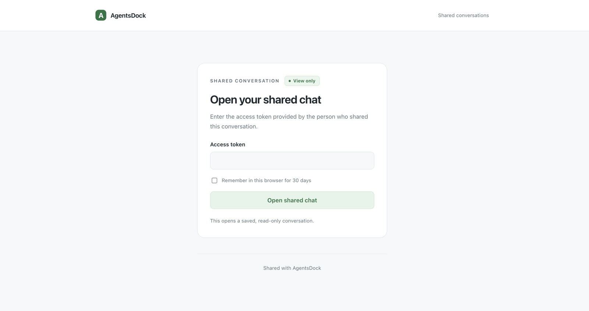
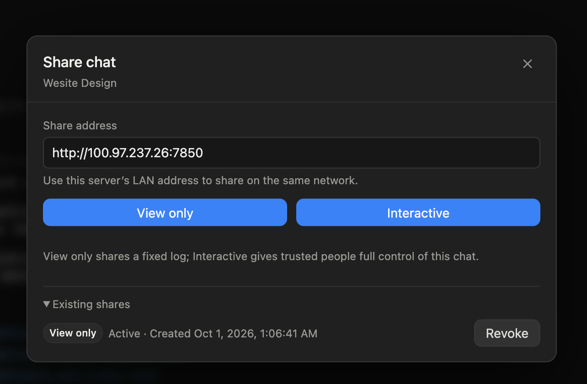
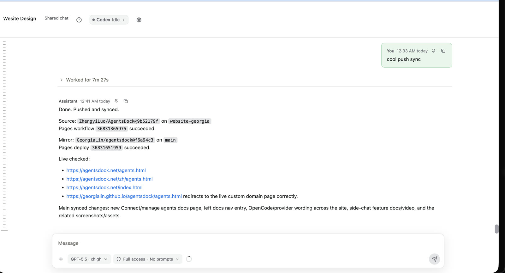

功能指南 / 会话
用链接和 token 分享会话
创建受保护的浏览器分享：只读分享用于查看固定日志，Interactive 分享适合让可信的人进入同一个实时会话一起操作。
在会话菜单中选择 Share Chat，再选择 View only 或 Interactive。之后把生成的链接和 access token 发给对方即可。下面这段演示已经隐藏真实的分享地址和 token。
打开分享页面
对方打开分享链接后，需要输入你提供的 access token。也可以把 token 记在当前浏览器里；访问权限会一直保留到分享过期，或你手动撤销。

随时撤销
已经创建的分享会保留在原会话下。再次打开 Share Chat，点击 Revoke，这个链接就会停止可用。

在浏览器里一起协作
View only 分享会打开一份已保存的对话。Interactive 分享会打开实时共享会话，可信的人可以在浏览器里继续发消息、附加图片，并接着同一个会话工作。
